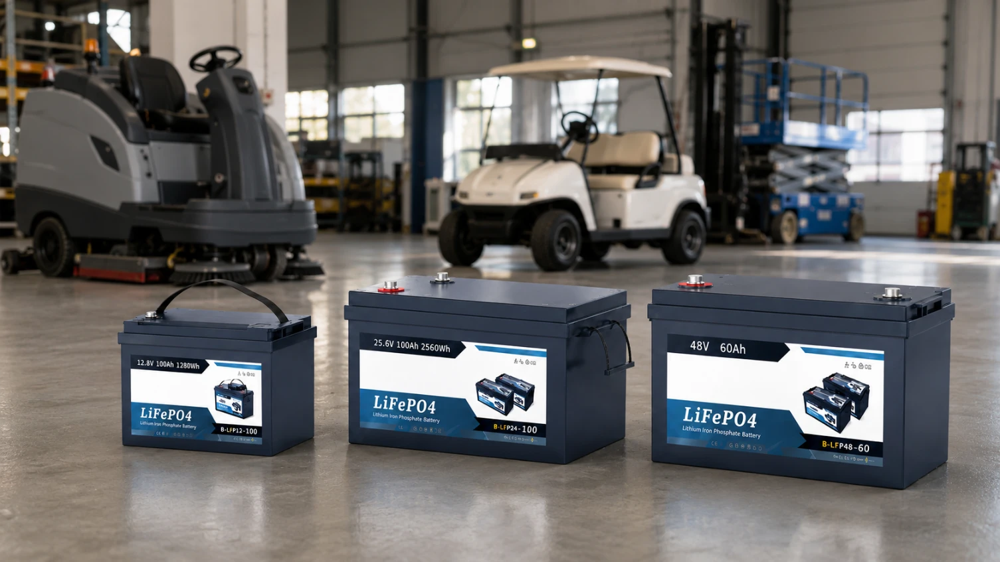
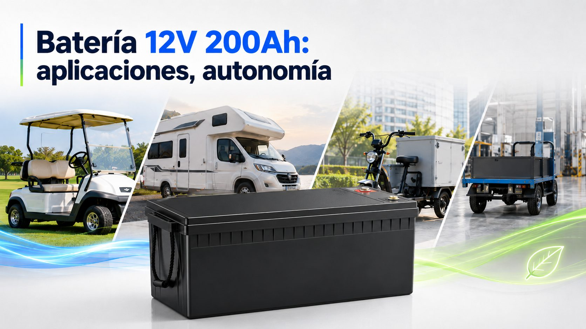
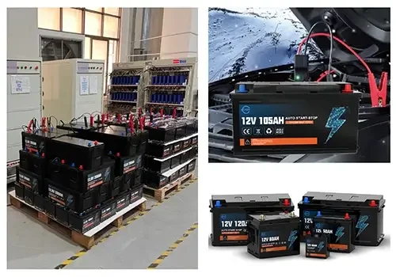

Herramientas eléctricas
Baterías para taladros, amoladoras, sierras y diferentes herramientas.

Baterías recargables para herramientas eléctricas y vehículos eléctricos
Somos un emprendimiento dedicado a la comercialización de baterías recargables para herramientas eléctricas, bicicletas, motocicletas y vehículos eléctricos.



En EnerVolt buscamos ofrecer soluciones prácticas de almacenamiento de energía para herramientas y medios de transporte eléctricos.
Baterías para taladros, amoladoras, sierras y diferentes herramientas.
Soluciones para bicicletas, motocicletas y vehículos eléctricos.
Alternativas reutilizables para aprovechar mejor la energía eléctrica.
Conoce nuestros productos o envíanos una consulta.
Contactar con EnerVolt